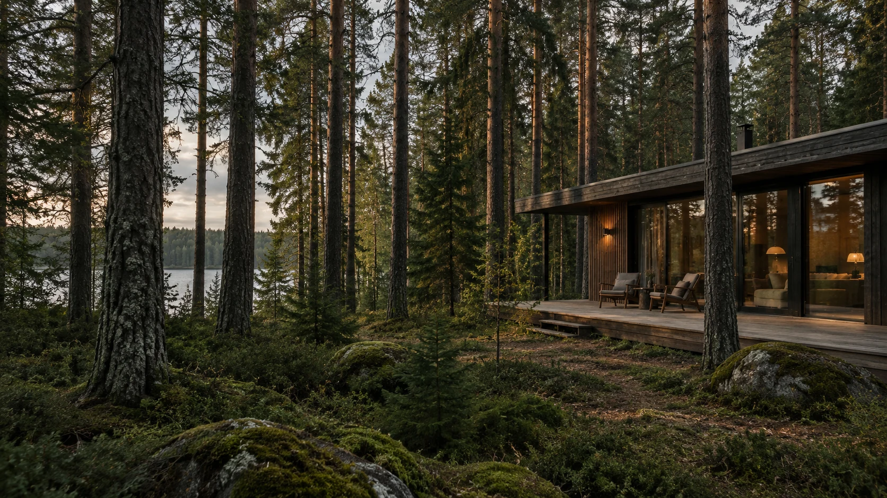
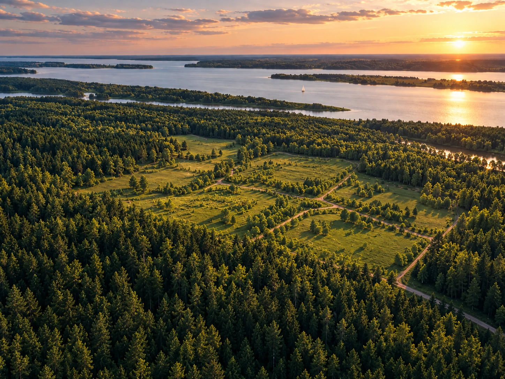
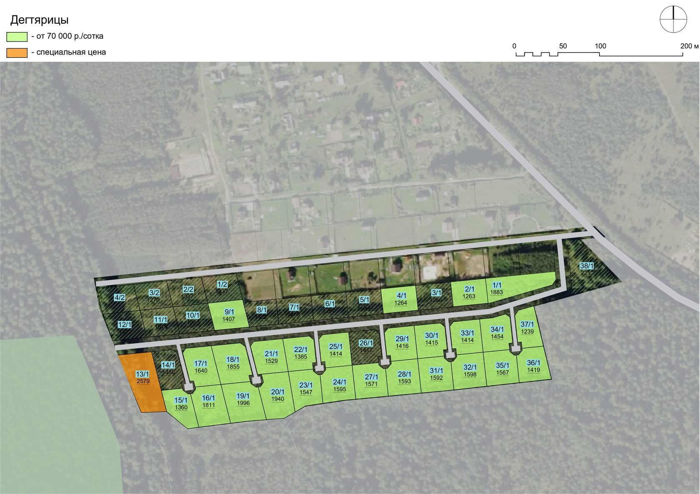
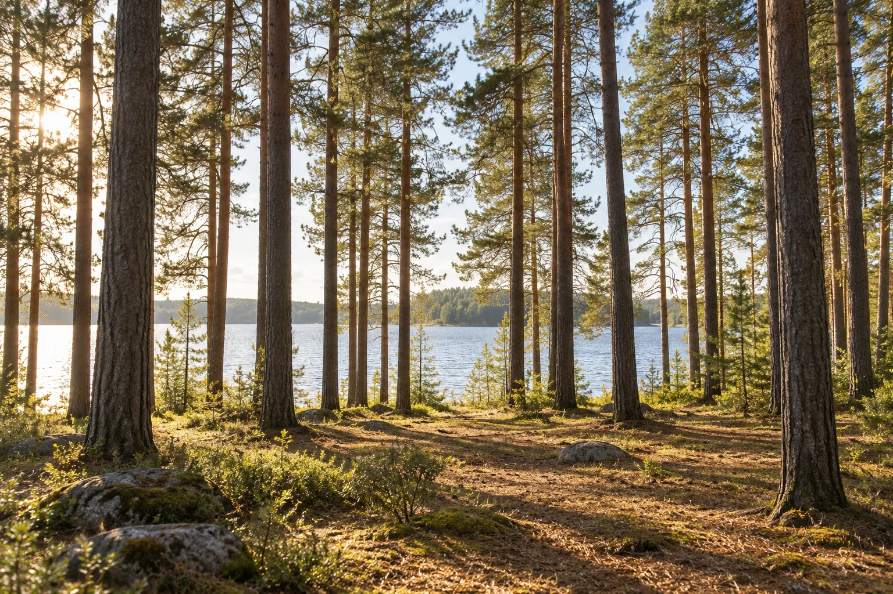
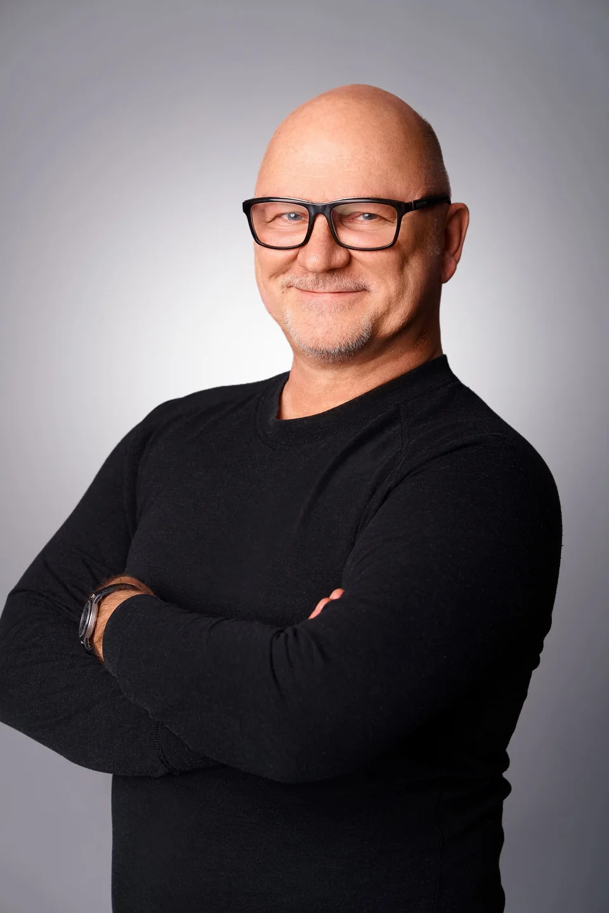
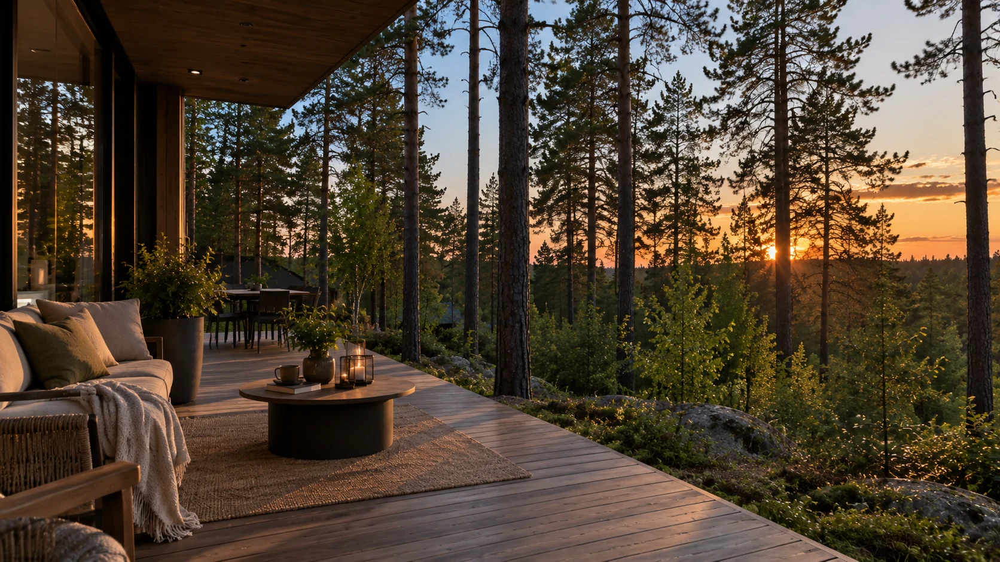

5 кварталов
Разные участки для ваших планов на загородную жизнь.

Новые Высока
Земельные участки рядом с Высоковским бором — бывшей «Чёрной речкой». По дороге к Коприно, недалеко от Волги.
от 70 000 ₽/сотка
Разные участки для ваших планов на загородную жизнь.
Земля для строительства собственного дома.
Чистый воздух, лес и природное окружение рядом с домом.
Покупка участка без посредников и лишних звеньев.
«Новые Высока» — среди лесов Рыбинского района, рядом с детским лагерем «Высоковский бор» (бывшей «Чёрной речкой»). По дороге к Коприно — популярному месту отдыха на Волге. Здесь тихо, зелено и есть пространство для собственного дома.
Посмотреть расположение
Лес, Волга и дом за городом — несколько коротких историй о том, как здесь может проходить ваш день.
Реальные съёмки территории с высоты и прогулки с основателем проекта. Познакомьтесь с местом ещё до поездки.
На машине или общественном транспорте — выберите удобный маршрут до проекта.
Пять кварталов проекта «Новые Высока» расположены среди лесов Рыбинского района. Выберите интересующую территорию и познакомьтесь с её генпланом.
Скачать презентацию проекта

Лесные прогулки, отдых у Волги и всё необходимое для повседневной жизни. Посмотрите, что находится рядом с «Новыми Высока».

Команда «Магазина Земли» сопровождает сделку: от выбора участка и проверки документов до оформления права собственности.

Команда «Магазина Земли» больше десяти лет работает с земельными проектами в Ярославской области. Основатель компании Дмитрий Родионов сегодня руководит проектом «Новые Высока» и отвечает за его развитие.
В опыте команды — не только продажа участков, но и участие в развитии загородных территорий, в том числе проектов Коприно и «Ярославское Взморье». Этот опыт помогает смотреть на «Новые Высока» комплексно: от юридической подготовки земли и организации подъездов до будущей инфраструктуры, благоустройства и сценариев загородной жизни рядом с лесом и Волгой.
«С землёй связаны уверенность в будущем, возможность создавать своё пространство и передавать его следующим поколениям семьи».
Что помогает принять решение спокойно и без лишних вопросов.
Коротко о земле, дороге, коммуникациях и покупке.
Участки продаёт собственник. «Магазин Земли» представляет проект и сопровождает покупателя.
Индивидуальное жилищное строительство — ИЖС. Можно построить отдельно стоящий жилой дом с учётом правил застройки и ограничений участка.
Земли населённых пунктов. Перед покупкой сведения по выбранному участку проверяются по выписке ЕГРН.
Для участков в Дегтярицах и Николо-Корме заявлен круглогодичный подъезд. Дорогу к конкретному участку лучше оценить во время просмотра.
Заявку подают в сетевую организацию. Стоимость, срок и перечень работ зависят от технических условий конкретного участка.
Воду, канализацию, газ и интернет проверяем отдельно для каждого участка. Условия подключения сообщит команда проекта.
Перед выбором команда назовёт полную стоимость участка и отдельно перечислит дополнительные расходы, если они есть.
Рассрочку до 12 месяцев предоставляет собственник. Первоначальный взнос — 30%, остаток выплачивается по графику договора.
До полного расчёта участок находится в залоге у продавца. Запись об обременении отражается в ЕГРН.
Да. Запишитесь на экскурсию, чтобы посмотреть кварталы, подъезд и окружение выбранного участка.
Да. Команда запишет видео подходящего участка и поможет сравнить варианты дистанционно.

Приезжайте на просмотр территории «Новых Высока»: познакомьтесь с кварталами, посмотрите участки, подъезд и окружение.